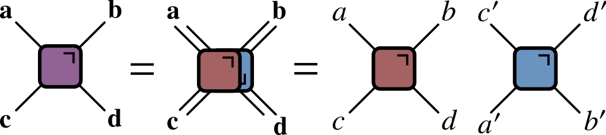
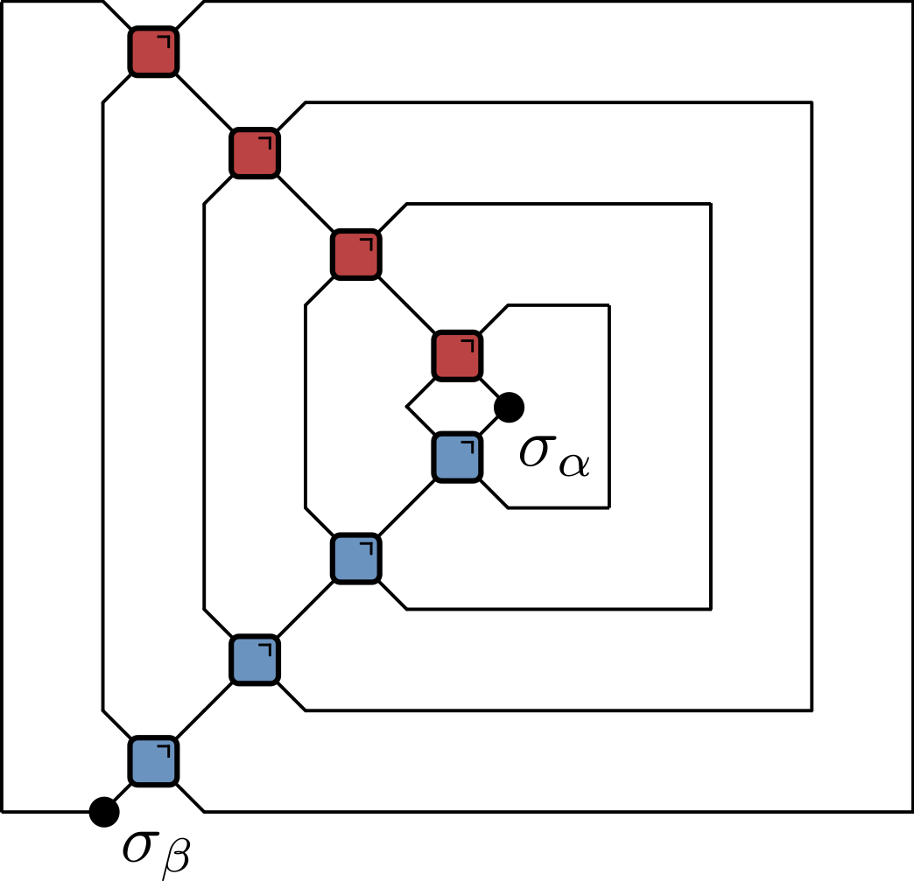

\(\sqrt{\operatorname{SWAP}}\) conserves number of 1s and 0s
\(\sqrt{\operatorname{SWAP}}\) together with arbitrary single qubit unitary operators form universal gate set that allows for universal quantum computation
General two qubit unitary
Any two-qubit unitary \(U\in \mathcal{U(4)}\) can be written
\(\bra{\Psi}\mathcal{O}\ket{\Psi}=\bra{\Psi_0}\mathcal{U}^\dagger\mathcal{O}\mathcal{U}\ket{\Psi_0}\) has diagrammatic representation
(leave initial state \(\ket{\Psi}\) unspecified for the moment)
“Folded” representations
Since every \(U\) accompanied by \(U^\dagger\), include both in single unit by “folding” one on top of the other

Lines correspond to two indices, and therefore \(2^2=4\) dimensions
Unitarity condition takes form:
In folded picture expectation value \(\bra{\Psi}\mathcal{O}\ket{\Psi}\) looks like this
Click to apply unitary condition!
“Light cone” emerges, reflecting region of circuit that affects expectation value
Reduced density matrix
Expectation value of operator in region \(A\) can be computed from reduced density matrix\(\rho_A\) for region \(A\)\[
\rho_A = \operatorname{tr}_{B}\left[\ket{\Psi}\bra{\Psi}\right]=\operatorname{tr}_{B}\left[\mathcal{U}\ket{\Psi_0}\bra{\Psi_0}\mathcal{U}^\dagger\right]
\] (\(B\) is complement of \(A\))
Initial RDM of bottom part of wedge is all that matters!
Quantifying entanglement
RDM quantifies entanglement present in a quantum state describing a system composed of two subsystems A and B
General state is vector \(\in\mathcal{H}=\mathcal{H}_A\otimes\mathcal{H}_B\)
Write in terms of basis vectors \(\ket{a}_A\) and \(\ket{b}_B\) for A and B subsystems \[
\ket{\Psi}_{AB} = \sum_{a=1}^{n_A}\sum_{b=1}^{n_B} \Psi_{ab}\ket{a}_A\ket{b}_B
\]\(n_{A/B}=\operatorname{dim} \mathcal{H}_{A/B}\)
Now regard \(\psi_{ab}\) as matrix and perform a singular value decomposition
\(S_A\) vanishes for product state, and is otherwise positive
Rényi entropies provide more complete information \[
S^{(\alpha)}_A = \frac{1}{1-\alpha}\log \text{tr}\left[\rho^n\right]=\frac{1}{1-\alpha}\sum_n p_n^\alpha
\]\(S^{(\text{vN})}_A=\lim_{\alpha\to 1} S^{(\alpha)}_A\). \(S^{(0)}_A\) is number of nonzero Schmidt coefficients (aka Schmidt rank) \[
S^{(2)}_A = -\log \sum_n p_n^2 = -\log \gamma\tr \rho_A^2
\] where \(\gamma\equiv \tr \rho_A^2\) is purity
Toy model
Circuit of SWAP gates
Initial state is product of Bell states \[
\ket{\Phi^+}_{2n, 2n+1} = \frac{1}{\sqrt{2}}\left[\ket{0}_{2n}\ket{0}_{2n+1}+ \ket{1}_{2n}\ket{1}_{2n+1}\right]
\]\[
\operatorname{tr}_{2}\left[\ket{\Phi^+}_{12}\bra{\Phi^+}_{12}\right] = \frac{1}{2}\mathbb{1}_1
\] with entanglement entropy of one bit
\(\rho_A\) therefore has factor \(\mathbb{1}_n\) for each site \(n\in A\) with “partner” in \(B\)
If both qubits of a Bell pair are at sites \(n,m\in A\) they give a factor \(\ket{\Phi^+}_{nm}\bra{\Phi^+}_{nm}\): a pure state
Entanglement entropy has contributions from first case only
When \(|x|>t\) unitarity condition leads to removal of all\(U\)s and \(U^\dagger\)s \[
c_{\alpha \beta}(x,t) = \frac{1}{4}\tr\left[\sigma_{\alpha}\right]\tr\left[\sigma_{\beta}\right]=0,
\] and correlations vanish (if operators are traceless)
Correlations only nonzero inside “light cone”
When \(|x|=t\) remaining tensor network is particularly simple:

Rewrite in several ways, including in folded representation:
\(q\) is local Hilbert space dimension (\(q=2\) up to now)
Normalization factor by comparing with \(\sigma_\alpha=\sigma_\beta=\mathsf{1}\) (here \(t=4\))
Evaluate by iteratively applying operator map \(\mathcal{M}_+\) or \(\mathcal{M}_-\)
“One step inside” involves quantum channel acting on two-site operators: a space of dimension \(q^4\).
Taking \(s\) steps inside channel acting on \(q^{2s}\)-dimensional space
General situation is really exponentially hard, as we’d expect
Operator spreading
How does a local operator “look” as it evolves in Heisenberg picture?
\(Z_n(t)=\mathcal{U}^\dagger(t)Z_n \mathcal{U}(t)\) appears in \(\langle Z_n(t)Z_m(0) \rangle\), but this is only one “component” of \(Z_n(t)\)
Any observable such as \(Z_n(t)\) can be expressed as expansion \[
Z_n(t)= \sum_{\mu_{1:N}=\\{1,x,y,z\\}^N} \mathcal{C}_{\mu_{1:N}}(t) \sigma_1^{\mu_1}\otimes\cdots \sigma_N^{\mu_N}
\]\[
\mathcal{C}_{\mu_{1:N}}(0)=\begin{cases}
1 & \mu_j=z, \mu_k=1,\forall k\neq j \\\\
0 & \text{otherwise}
\end{cases}
\]
Since \(\tr\left[\sigma_\alpha\sigma_\beta\right]=2\delta_{\alpha\beta}\), can extract spin correlations from \(\langle Z_j(t)Z_k(0)\rangle=C_{jk}(t) \equiv \mathcal{C}_{1\cdots \mu_k=z \cdots 1}(t)\)
This represents only one component of operator expansion
Operator norm \(\tr\left[Z_n^2(t)\right]=2\) is conserved under time evolution